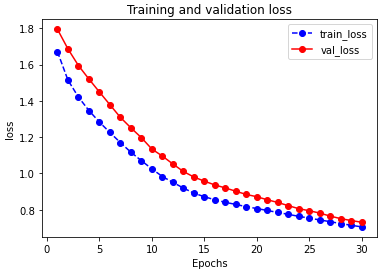
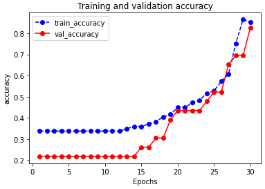
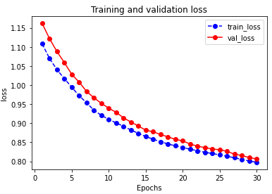
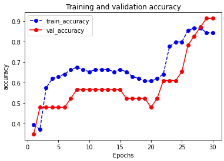
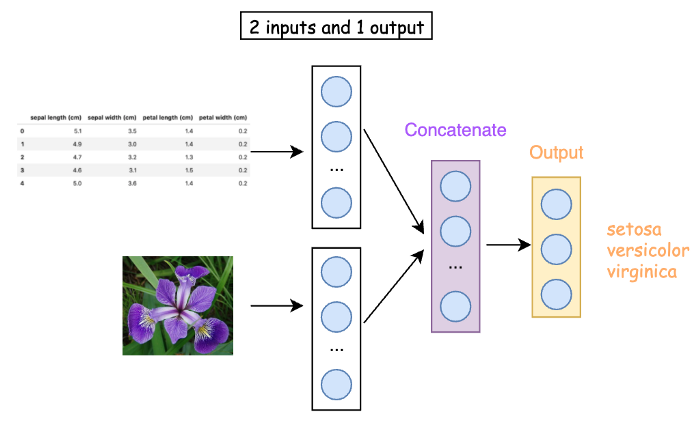
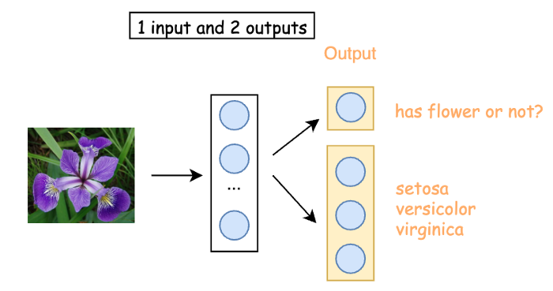

AI in General
All the information I need for AI
LSTM
Deep Learning
- Comprehensive deep learning course from a Taiwanese Prof: Hung-yi Lee
3 Different Ways for Deep Learning in Tensorflow 2.0
1. Sequential Model: The easiest way to get up and running with Keras in TensorFlow 2.0
2. Functional: For more complex models, in particular model with multiple inputs or outputs.
3. Model Subclassing: Fully-customizable and enables us to implement our own custom forward-pass of the model
Data Preparation Part
import tensorflow as tf
import pandas as pd
import numpy as np
import matplotlib.pyplot as plt
from sklearn.datasets import load_iris
from sklearn.model_selection import train_test_split
iris = load_iris()
# Load data into a DataFrame
df = pd.DataFrame(iris.data, columns=iris.feature_names)
# Convert datatype to float
df = df.astype(float)
# append "target" and name it "label"
df['label'] = iris.target
# Use string label instead
df['label'] = df.label.replace(dict(enumerate(iris.target_names)))
# label -> one-hot encoding
label = pd.get_dummies(df['label'])
label.columns = ['label_' + str(x) for x in label.columns]
df = pd.concat([df, label], axis=1)
# drop old label
df.drop(['label'], axis=1, inplace=True)
# Creating X and y
X = df[['sepal length (cm)', 'sepal width (cm)', 'petal length (cm)', 'petal width (cm)']]
# Convert DataFrame into np array
X = np.asarray(X)
y = df[['label_setosa', 'label_versicolor', 'label_virginica']]
# Convert DataFrame into np array
y = np.asarray(y)
X_train, X_test, y_train, y_test = train_test_split(X, y, test_size=0.25)
1.Sequential Model
from tensorflow.keras.models import Sequential
from tensorflow.keras.layers import Dense
# Passing a list of layers to the constructor
model = Sequential([
Dense(5, activation='relu', input_shape=(4,)),
Dense(10, activation='relu'),
Dense(3, activation='softmax')])
model.summary()
Above is identical to the below:
# Adding layer via add() method
model = Sequential()
model.add(Dense(5, activation='relu', input_shape=(4,)))
model.add(Dense(10, activation='relu'))
model.add(Dense(3, activation='softmax'))
model.summary()
Training
model.compile(optimizer='rmsprop', loss='categorical_crossentropy', metrics=['accuracy'])
history = model.fit(X_train, y_train, batch_size= 64, epochs= 30, validation_split=0.2)
Plot the traning, validation loss and training, validation accuracy
def plot_metric(history, metric):
train_metrics = history.history[metric]
val_metrics = history.history['val_'+metric]
epochs = range(1, len(train_metrics) + 1)
plt.plot(epochs, train_metrics, 'bo--')
plt.plot(epochs, val_metrics, 'ro-')
plt.title('Training and validation '+ metric)
plt.xlabel("Epochs")
plt.ylabel(metric)
plt.legend(["train_"+metric, 'val_'+metric])
plt.show()
plot_metric(history, 'loss')

plot_metric(history, 'accuracy')

Evaluate the model with test data: model.evaluate(x = X_test,y = y_test)
Output:
2/2 [==============================] - 0s 997us/step - loss: 0.7898 - accuracy: 0.7632
[0.7897533774375916, 0.7631579041481018]
When to use Sequential Model
A Sequential model is appropriate for a plain stack of layers where each layer has exactly one input and one output.
A Sequential model is not appropriate when:
1. Your model has multiple inputs or multiple outputs
2. Any of your layers have multiple inputs or multiple outputs
3. You need to do layer sharing
4. You want non-linear topology (e.g. a residual connection, a multi-branch model)
2.Functional API
Same neural network with Functional API:
from tensorflow.keras.models import Model
from tensorflow.keras.layers import Input, Dense
# This returns a tensor
inputs = Input(shape=(4,))
# A layer instance is callable on a tensor, and returns a tensor
x = Dense(5, activation='relu')(inputs)
x = Dense(10, activation='relu')(x)
outputs = Dense(3, activation='softmax')(x)
# This creates a model that includes
# the Input layer and three Dense layers
model = Model(inputs=inputs, outputs=outputs)
model.summary()
Training: same with sequential
model.compile(optimizer='rmsprop', loss='categorical_crossentropy', metrics=['accuracy'])
history = model.fit(X_train, y_train, batch_size= 64, epochs= 30, validation_split=0.2)
Use the same function to plot loss and accuracy:
plot_metric(history, 'loss')

plot_metric(history, 'accuracy')

Evaluate the model: model.evaluate(x = X_test,y = y_test)
Output:
2/2 [==============================] - 0s 998us/step - loss: 0.7550 - accuracy: 0.9474
[0.7550188302993774, 0.9473684430122375]
Multi-input and Multi-output Models
Functional API is useful for scenarios like:
- A model with 2 inputs and 1 output
- A model with 1 input and 2 outputs
- A model with 2 input and 2 outputs
2 inputs and 1 output: Suppose we have image data and structured data for iris flower classification. We would like to build a Machine Learning model like below: 
from tensorflow.keras.layers import concatenate
# 2 inputs, one structure data, the other image data
input_structure = Input(shape=(4,), name='input_structure')
input_image = Input(shape=(256,), name='input_image')
# middle layers
x_1 = Dense(10, activation='relu')(input_structure)
x_2 = Dense(100, activation='relu')(input_image)
c = concatenate([x_1, x_2])
outputs = Dense(3, activation='softmax', name='outputs')(c)
model = Model(inputs=[input_structure, input_image], outputs=outputs)
model.summary()
1 input and 2 outputs: Suppose we only have image data and we want to identify if given image is an iris flower and what kind of iris flower it is. 
from tensorflow.keras.layers import concatenate
# only one input
input_image = Input(shape=(256,), name='input_image')
# middle layer
x = Dense(300, activation='relu')(input_image)
# output layer
output_1 = Dense(1, activation='sigmoid', name='output_1')(x)
output_2 = Dense(3, activation='softmax', name='output_2')(x)
model = Model(inputs=input_image, outputs=[output_1, output_2])
model.summary()
2 inputs and 2 outputs: Suppose we have image data and structured data. We want to identify if given image is an iris flower and what kind of iris flower it is.
from tensorflow.keras.layers import concatenate
# 2 inputs, one structured data, the other image data
input_structured = Input(shape=(4,), name='input_structured')
input_image = Input(shape=(256,), name='input_image')
# middle layers
x_1 = Dense(10, activation='relu')(input_structure)
x_2 = Dense(300, activation='relu')(input_image)
c = concatenate([x_1, x_2])
# output layser
output_1 = Dense(1, activation='sigmoid', name='output_1')(c)
output_2 = Dense(3, activation='softmax', name='output_2')(c)
model = Model(inputs=[input_structured, input_image], outputs=[output_1, output_2])
model.summary()
3. Model Subclassing
This way of building models gives a low level control over both the construction and the operation of a model. However, it is way harder to utilize it than the Sequential Model and Functional API.
from tensorflow.keras.models import Model
from tensorflow.keras.layers import Dense
class CustomModel(Model):
def __init__(self, **kwargs):
super(CustomModel, self).__init__(**kwargs)
self.dense1 = Dense(5, activation='relu', )
self.dense2 = Dense(10, activation='relu')
self.dense3 = Dense(3, activation='softmax')
def call(self, inputs):
x = self.dense1(inputs)
x = self.dense2(x)
return self.dense3(x)
my_custom_model = CustomModel(name='my_custom_model')
CustomModel inherits from the Model class, which is the same Model class that Sequential and Functional API inherit.
The important point of Model subclassing is that we create layers in the initializer __init__() and define the forward pass in the call() method.
Training and Evaluation same as the others:
my_custom_model.compile(optimizer='rmsprop', loss='categorical_crossentropy', metrics=['accuracy'])
history = my_custom_model.fit(X_train, y_train, batch_size= 64, epochs= 30, validation_split=0.2)
plot_metric(history, 'loss')
plot_metric(history, 'accuracy')
my_custom_model.evaluate(x = X_test,y = y_test)
Tensorflow Pruning in Keras
Make model smaller: Pruning